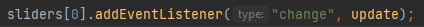

Opdracht 2
Bestudeer de code van de demonstratie op het Sources tabblad in de Chrome Developer Tools.
Waar wordt de event listener gekoppeld aan de slider?
Waarom moeten we die op twee soorten events koppelen?
Indien ik enkel het change-event gebruik, krijg ik enkel de definitieve waarde. (De waarde bij het loslaten van de slider).
de waarde van de slider is momenteel : 43
Indien ik enkel het input-event gebruik, krijg ik de waarden wanneer de slider in actie is

In de CSS file wordt nergens een rode kleur opgegeven, waar wordt dan wel de rode kleur van het blokje ingesteld?
In de JavaScript file:
Waarom schrijven we telkens sliders[0] en colorDemos[0] en niet gewoon sliders of colorDemos?
Omdat het collecties zijn